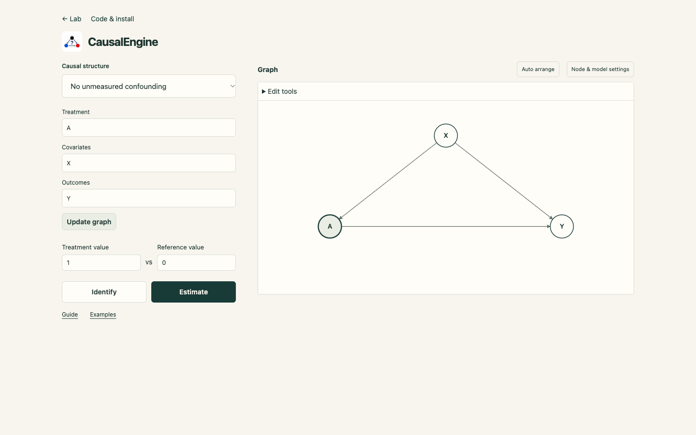

1. Enter your variables
Launch the app and select No unmeasured confounding under Causal structure. A Treatment is the action whose settings you compare. Covariates are measured before that action. Outcomes are the quantities you want to compare afterward.
- In Treatment, enter
A. - In Covariates, enter
C1, C2, C3. - In Outcomes, enter
Y1, Y2, Y3. - Select Update graph.
You should see seven variables. Blank fields create no nodes: clearing Covariates leaves only A and your outcomes. The visible Treatment value and Reference value start at 1 and 0. These values apply to all selected treatments; the role template creates binary treatments, so use 0 or 1.
To group CSV columns, enter X (x1, x2, …, x25) in Covariates. Both … and ... expand an ascending
numeric range with the same prefix. The graph still has one logical X. Click X to unfold its member circles inside a boundary, then
click its header to fold it back. Enter or Space also toggles it. Members show the contents of X, not separate causal relationships.
Plain C1, C2 still creates two logical variables. Cluster declarations also work in timeline Covariates fields.
Names must start with a letter and contain only letters, digits, or underscores. Every name must be unique across roles and times.
Score_1 is valid; exam score and Score-1 are not. Names starting with U are reserved for hidden
roots. An invalid entry does not overwrite the graph.


2. Review what the graph assumes
In this template, each covariate points to each treatment and outcome, and each treatment points to each outcome. There are no hidden common causes. These arrows are proposed assumptions; the app does not infer relationships from variable names or a CSV.
Select Front-door for a different template. Its separate Mediators field contains measured variables
between treatment and outcome. For example, enter Treatment A, Covariates C1, Mediators M, and
Outcomes Y1, Y2, then update.
This template adds an unobserved root affecting treatment and outcomes, treatment → mediators → outcomes, and baseline covariates → treatment/mediators/outcomes. Mediators are separate from baseline covariates. A blank mediator field can remain a draft, but this template needs a mediator to run. Identification and estimation are checked for the actual graph and question; selecting Front-door does not guarantee an available or reliable estimate.
3. Describe variables at different times
Select No unmeasured confounding -- Sequential. The timeline starts with two time points. Each has Covariates measured before its Treatment, and Outcomes measured afterward.
- At Time 1, enter
C1,A1, andY1. - At Time 2, enter
C2,A2, andY2. - Select Add time. At Time 3, enter
C3,A3, andY3. - Leave Markovian order at Full history, then select Update graph.
Full history connects earlier variables to all later variables. Within each time, covariates precede treatment and outcomes, and treatment precedes outcomes. These connections are explicit, editable assumptions. Later covariates are not pooled into one baseline adjustment set.
Markovian order limits the maximum direct time lag. Order 1 allows direct arrows only to the next numbered time; order 2 also allows a direct arrow from Time 1 to Time 3. It does not limit effects that travel along several arrows. Changing this setting changes the proposed graph when you press Update graph.
You may leave a role or an entire time blank. Remove deletes a time without renumbering the remaining Time IDs. Blank and deleted gaps still count: Time 1 to Time 3 has a lag of 2 even if Time 2 is empty or removed. With only A1 at Time 1 and Y3 at Time 3, order 1 adds no arrow between them; order 2 allows one. Review the resulting graph.
A repeated measurement needs a distinct name, such as X1 and X2. The comparison uses the visible treatment and reference values and reports each outcome separately. An arrow that runs backward through the entered timeline must be fixed before continuing.
4. Identify, then choose data to estimate
Identify: check the graph
Press Identify. No CSV, generated sample, or simulated model is needed. Each outcome receives its own identification status for the supplied graph and question. Identifiable means the graph assumptions allow the requested effect to be determined from observed data. It does not validate those assumptions or promise an accurate estimate from your available rows. The identified expectation is shown directly as an expression using observed quantities, with sums for discrete variables and integrals for continuous variables. It is a mean under one treatment setting, not the mean difference reported by Estimate. Details contains the returned reason; an unfinished formula expansion is reported without changing the identification status.
Estimate: Upload CSV
Choose a CSV file using the file button. If your browser does not open a file dialog, open Other ways to load CSV and drop a file or paste its text. Example CSV → Load example opens the supplied example directly, without a download dialog.
- Press Estimate, then Upload CSV.
- Choose your CSV file and open Data columns below the graph. Each observed graph variable receives a column binding.
- Match treatments and outcomes to individual numeric columns. A baseline covariate can contain several columns: expand its name in Data columns and check its members. A column cannot be reused. Headers can differ from graph names; hidden roots need no column.
- Check the visible treatment and reference values, then press Run estimate.
The same selected rows are used for every outcome. The app computes a data-only mean difference; it does not generate a substitute sample or calculate a simulated-model reference for your CSV. CSV parsing and calculation stay on your device.
Use scalar treatment and outcome variables, at most 5,000 rows, 100 selected columns, and 500,000 selected cells. Baseline covariates may group several columns when the current graph has a certified adjustment set. At least 128 rows are needed for estimation, and some questions require more. Selected cells must contain finite numbers: no missing values, NaN, or infinity. Binary variables require 0/1. Missing values, duplicate headers, reused columns, and invalid cells stop the calculation with an error; rows are not dropped or imputed. Unused columns may contain text because only mapped columns are sent to the estimator.
Try an upload example
Download example CSV: 512 synthetic rows with treatment A, columns x1 through x25,
and outcome Y. This is demonstration data, not a study. Enter Treatment A, Covariates X (x1, …, x25), and
Outcomes Y; press Update graph. Choose Estimate → Upload CSV and select the downloaded file. The matching headers bind
automatically. Open Data columns to inspect all 25 members, then select Run estimate. An uploaded file has no simulated-model ground
truth.
Estimate: Random Data
Enter Records as a whole number from 1 to 5,000. A baseline covariate has its own dimension control from 1 to 50: X dimension 25 produces x1 through x25 while keeping one logical X in the graph. A named declaration must match that dimension. These Random settings do not change a CSV binding. Model seed fixes the simulated rules; Data seed fixes generated records.
For a simulated example, use a plain scalar covariate such as X, choose Random Data, select 512 or 2,048
records, and press Generate Data. A declared cluster can be generated when its member count matches the selected Random
dimension (1–50). Model seed fixes the simulated rules; Data seed fixes the generated rows within
those rules. The same graph, model settings, seeds, and record count reproduce the same data. Changing only Data seed changes the rows,
not the underlying model. You can inspect or download these records before estimating. Run estimate reuses that dataset
when the graph, model settings, and record count are unchanged. One generated dataset is used for every outcome. The estimate uses those
records only. A separately labelled model reference is displayed after estimation and never substitutes for a failed estimate. Head and
Download CSV beside Generate Data use the same retained rows; they do not generate a new dataset.
Head and Download CSV
After loading or generating records, select Head. Choose 5 or 10 rows and 5 or 10 columns; Starting column lets you inspect every field. Download CSV saves the complete retained dataset with its original column names and numeric precision. Neither action generates data or estimates an effect. Changing the graph or source clears the preview so an older dataset is not mistaken for the current one.
Benchmarks
Choose Benchmarks, open the Dataset menu, and select IHDP, LaLonde, or ACIC. The menu opens directly below its control; use arrow keys and Enter to select, or Escape to close it. Dataset details contains the exact release, source, and data notes. There are two actions: Download CSV saves its working table; Estimate binds the dataset to the current graph and runs the calculation in one step.
Estimate preserves your graph, variable names, arrows, and node positions. For a graph with one treatment, one outcome,
and one baseline covariate node, it binds the released treatment and factual outcome to your treatment/outcome aliases and all released
covariates to the existing baseline node. For example, X = (x1, …, x25) keeps all 25 covariates inside X rather than adding
25 graph nodes. The compact graph caption shows the binding; open Data columns for the complete member list. This
grouping preserves the information used for adjustment and does not infer causal assumptions from data. Front-door and timeline
structures require mediator or time-specific bindings that these working datasets do not provide; the app reports this without changing
your graph. Use Upload CSV for custom bindings. Counterfactual outcomes and known simulation effects are excluded from working CSVs.
ACIC categorical members retain their codebook and use indicator features only inside the estimator. Selecting Random Data clears the
active CSV binding and uses the graph’s separate Random Data dimensions.
The first calculation loads numerical libraries. Keep the tab open while it prepares. Both data sources use your device’s CPU and memory; installing Python is unnecessary for the browser app. A graph with blank treatment or outcome roles can remain a draft, but running requires at least one of each.
5. Read each result and its warning
Which estimator ran?
For one binary treatment, scalar outcomes, and a verified baseline adjustment set, choose exactly one of AIPW, Outcome Regression (Plug-in), or IPW. AIPW combines arm-specific ridge outcome predictions with inverse-weighted residual corrections. Outcome Regression (Plug-in) averages the predicted outcome difference and fits no inverse weights. IPW averages weighted observed outcomes and fits no outcome regression. Each method uses two-fold cross-fitting and the same retained records; changing the method does not generate new data.
Where weights are fitted, their learned function stays between 1 and 20. This is a fitting constraint, not post-hoc clipping. Outcome regression uses the fixed ridge penalty 0.001; weight calibration uses the fixed slope penalty 0.01. Learned preprocessing and the selected nuisance functions use training rows only. The held-out scores are averaged across all rows without weight-sum renormalization. These fixed classes can leave bias. No separate propensity-probability model is fitted.
Open Details to see the actual method, fitted nuisance functions and fit counts, columns, fold seed, settings, diagnostics and warnings. An unused nuisance is explicitly marked as not fitted. A failed calculation does not silently switch estimators. Front-door and sequential structures retain their supported graph-specific estimator; the baseline-method menu is hidden there.
Select Estimate to run the chosen method on the current data. If no source is chosen, it opens and focuses the data choices. With Random Data selected, it reuses the current generation when unchanged, or prepares data using the visible settings. With a benchmark selected, the top Estimate button runs that benchmark with the selected method. Errors appear beside the data controls.
Use the ? beside an estimator or Details label for a short definition. Read Methods for the complete implemented methods, nuisance fits, diagnostics, limitations, and reproduction steps.
Copy and reproduce the calculation
- Open the estimate’s Details → Calculation code.
-
Select Download data to save the selected retained rows as
causalengine-estimate.csv. No new data or model reference is generated. - Select Copy code or Download .py. The script includes the actual implementation plus the selected estimator, exact column recipes, comparison, fold seed, and options used for this result.
-
Put the CSV and
reproduce_estimate.pyin one folder, then runpython reproduce_estimate.py. Use the Python environment prepared in Code & install. The three baseline estimators run standalone with NumPy and SciPy. Graph-specific estimator replay uses the installed CausalEngine package.
The source hash is checked before export. A changed source requires a new estimate. Simulation and benchmark ground truth are not estimator inputs.
Head opens and closes a preview of the current data. Its Rows, Columns, and Starting column controls change only the visible table. Download CSV saves the complete current data without generating new rows. Generating again or changing source closes the preview.
Identification and estimation answer different questions. A graph can be identifiable while the current estimator cannot calculate a reliable value from the available rows. Every estimated outcome has its own value or Not available status. One unsupported outcome does not hide the others.
Ground truth (exact) is a separate analytic mean difference in the fixed simulated model, not the average of the sampled rows. When analytic evaluation is unavailable, Model reference (Monte Carlo) identifies an approximate simulation result and its draw count. Benchmark Ground truth for IHDP and ACIC averages their supplied expected treatment effects over the released rows, not a population average or noisy realized differences. LaLonde has no supplied ground truth. The reference is shown only when the selected treatment/outcome bindings and comparison match it; an ordinary upload has none.
A positive mean difference means a larger outcome mean under the treatment setting than the reference setting; a negative number means a smaller mean. For your CSV, units belong to its outcome column. Random Data values are artificial and are not real study results or necessarily bounded scores.
The full action comparison appears above the results. Each outcome also names any actions omitted from its calculation because they are not ancestors of that outcome: no directed path leads from them to it in the graph. For example, later A2/A3 need not affect an earlier Y1. Only the query is reduced; the graph and dataset are unchanged. If no selected treatment can affect an outcome through the supplied graph, both reduced settings are empty and their mean difference is zero under those graph assumptions.
Approximate estimate: too few comparable records may make this result unreliable is a warning, not an accuracy certificate. More rows do not guarantee it disappears. No sampling standard error or confidence interval for the data estimate is provided. A Monte Carlo standard error, when shown for the separate model reference, describes numerical simulation error only. Open Details to read a returned reason when a result is unavailable; a simulated-model answer is never used as a fallback.
6. Arrange or edit while keeping your inputs
Drag nodes to move them. Auto arrange changes positions and curved routes only; it never deletes a node or arrow to improve appearance. Dense graphs may still contain crossings. On a phone, swipe within the graph to inspect a large model.
Edit tools adds or deletes nodes and arrows. A causal change marks the graph as Your edited model and clears prior results; moving a node does not change the question. Use Update graph explicitly to replace an edited graph with the role template, and review its replacement prompt.
Node & model settings opens on the right. The left variable fields and source choices stay in place. Inspect observed/hidden status, dimension, functions, seeds, and detailed query settings there; select Close settings to return. Simulated functions control Random Data and are not fitted to your uploaded CSV. Current data-only estimation supports scalar treatments and outcomes with fixed interventional mean differences, without factual evidence. Random baseline covariates can contain 1–50 components; CSV clusters use their bound columns.
Help
I cannot update the graph
Check duplicate names, invalid characters, and the reserved U prefix. The engine allows at most 100 variables, including hidden roots. Large graphs can be slow and may exceed a particular identification search or estimator’s limits.
My CSV will not run
Read the row/column error and correct the selected cell or mapping. Every observed variable needs a binding; a baseline cluster can include multiple distinct columns. Binary treatments must contain only 0/1. Empty, nonnumeric, or nonfinite selected values are rejected. Unused text columns do not need conversion. After changing the graph or mapping, run again to load the current selection.
I see Not available or UNKNOWN
The calculation was unsupported, lacked sufficient data, or did not finish within its budget. Read the outcome’s Details. An unavailable estimate does not by itself prove that the effect is mathematically unidentifiable. Use Identify for the separate graph-only result.
Which other methods work?
IV with Monotonicity, IV bounding, Difference-in-Differences, and Synthetic Control remain not implemented. A graph alone does not establish their additional assumptions.